Race-Night Fund-Raising Event - Alford - 26 Nov 22
The Eastern Branch's fund-raising event in support of the Guild was held on the evening of 26 November at Alford Church Hall. Once again the event was a Race Night, the 'Betty Collett Cup Meeting'; this was the 10th anniversary, although Covid put a stop to things for the last couple of years. While numbers were down on previous years, it was still an enjoyable evening.
There was a full race card of 9 races, each race having 8 horses. All of the horses in the first 8 races had been pre-sold
to owners from throughout the Guild for the very modest sum of £2-50 each!
Thanks go to all our owners, and to our race sponsors: David Reynolds, Motor Mechanic.
The winners of the first eight races and their owners were:
1. Elles Belles - Richard Willoughby
2. Early to Bed - Jan Clark
3. Famine - Phil Ford
4. Florida Dream - Sue Reynolds
5. Clementine - Barbara Rand
6. Baby Jane - Diney Blake
7. Jet Black - Clare Willoughby
8. Wild Beasts - Phil Ford
The Betty Collett Cup
The last race of the night was the 'Betty Collett Cup'. This was a race-off between the winning horses from the previous eight races.
The winner of this race was 'Clementine', owned by Barbara Rand. Barbara will be the proud holder of the Betty Collett Memorial Cup for the next 12 months.
At the halfway point in the proceedings there was a welcome break for a supper of jacket potato and lasagne followed by a crumble and custard, produced by Caitlin Meyer ably assisted by her team of helpers.
The raffle provided more fun and prizes, raising £49.00, and our thanks go to all who donated prizes.
Overall, including the raffle, we raised £387.75 for the Guild, for which our thanks go to all who participated in any way in the evening.
Phil Ford
Branch Practice at Tattershall Saturday 5th November 2022
On a cold and damp Saturday afternoon the bells of Holy Trinity Church Tattershall sang out for the first time in a long time, a mixture of a local Covid-19 spike and maintenance issues had kept them silent for quite a while. Approximately 20-25 Lincolnshire ringers, with varying degrees of experience attended, making it a very mixed session.
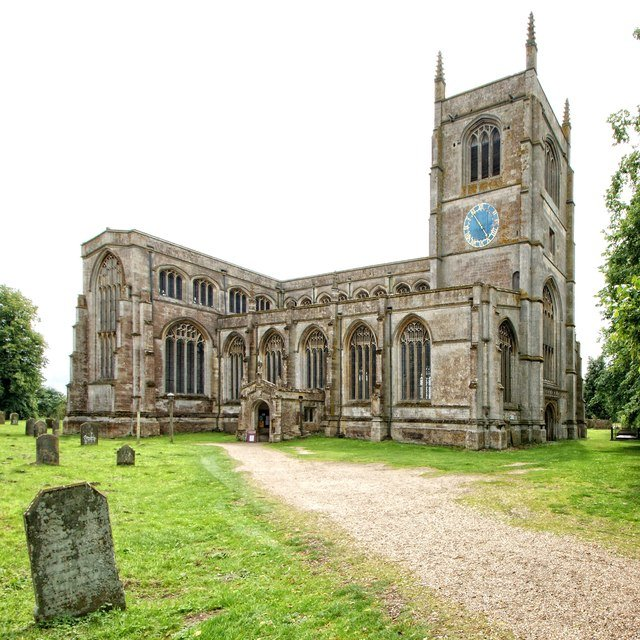
Jo French kept the bells moving constantly, with a mixture of ringing from rounds and call changes, plain hunt, PBD, Cambridge, Buxton Bob and Grandsire. There was something for every ringer and the novice ringers present, who had never rung at Tattershall before, gained confidence from the help the experienced ringers were more than happy to provide.
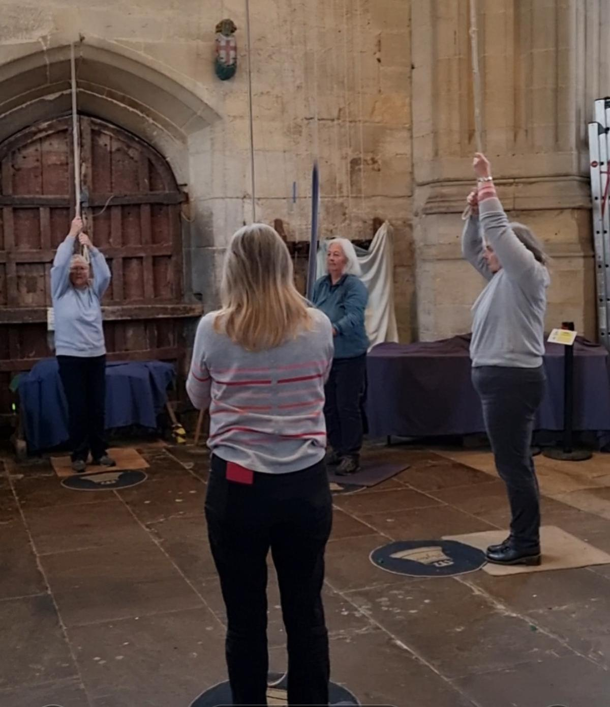
Thank you to everyone who helped make this practice successful. A comment was made that it was a really friendly meeting, helped by the serving of hot drinks and home made cakes, donations were split between the Church and EB Bell Repair Fund.
Tess Rowland
Guild 8 bell striking competition - Saturday 8th October 2022
The Guild 8 bell striking competition was held on Saturday 8th October 2022, at Washingborough on a beautiful autumn evening. Five teams rang the set piece of two leads of plain bob major and were judged by Neil Donavon from Beverley, Yorkshire.
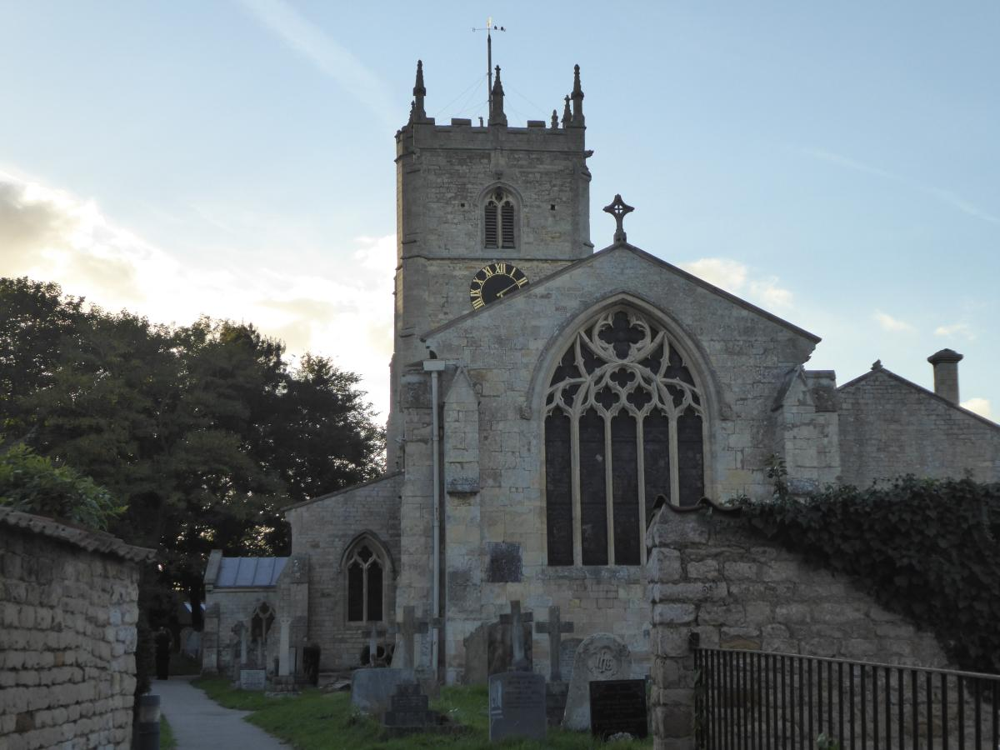
The results were as follows, comments according to the judge:
1. Central Branch team 2, came first with very good ringing
2. West Lindsey came second, excellent ringing, 7 faults
3. Central Branch team 1, third with 15 faults
4. Eastern Branch, fourth with 30 faults ringing too quickly and method mistakes were made
5. Southern Branch, fifth with 40 faults, choppy ringing which improved as it went along
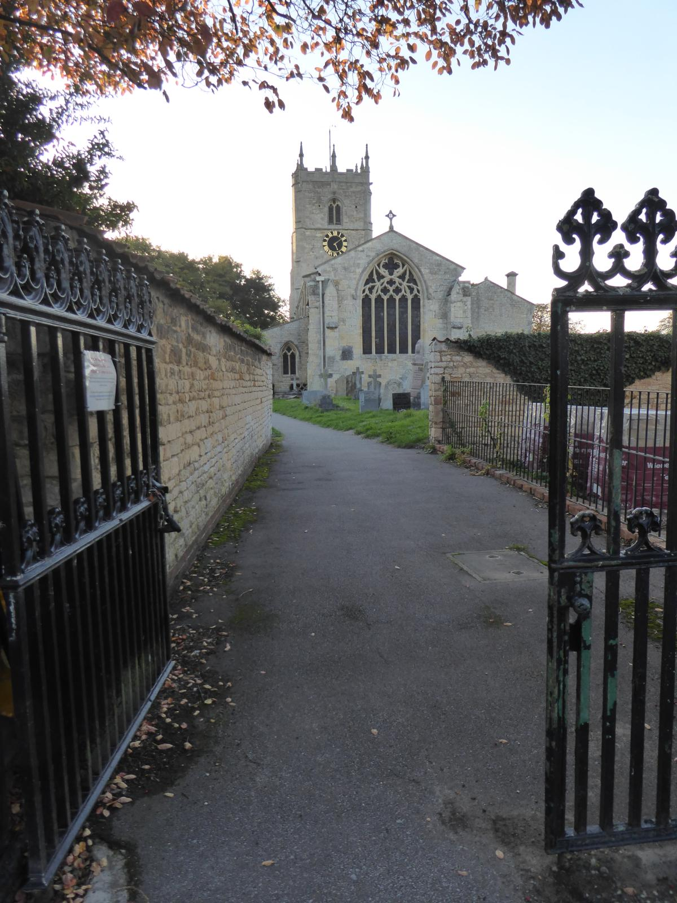
treble Helen Brotherton
2nd Isabel Barker
3rd Val Wild
4th Jo French
5th Kate Meyer
6th David Collin
7th James Barker
tenor
The Eastern Branch team were: Tony Barker (c)
The Guild Master, Chris Turner, thanked the judge with a suitable gift, the Central Branch provided a delicious tea and were well organised hosts.
Val Wild
Evensong at Lincoln - Sunday 7th August
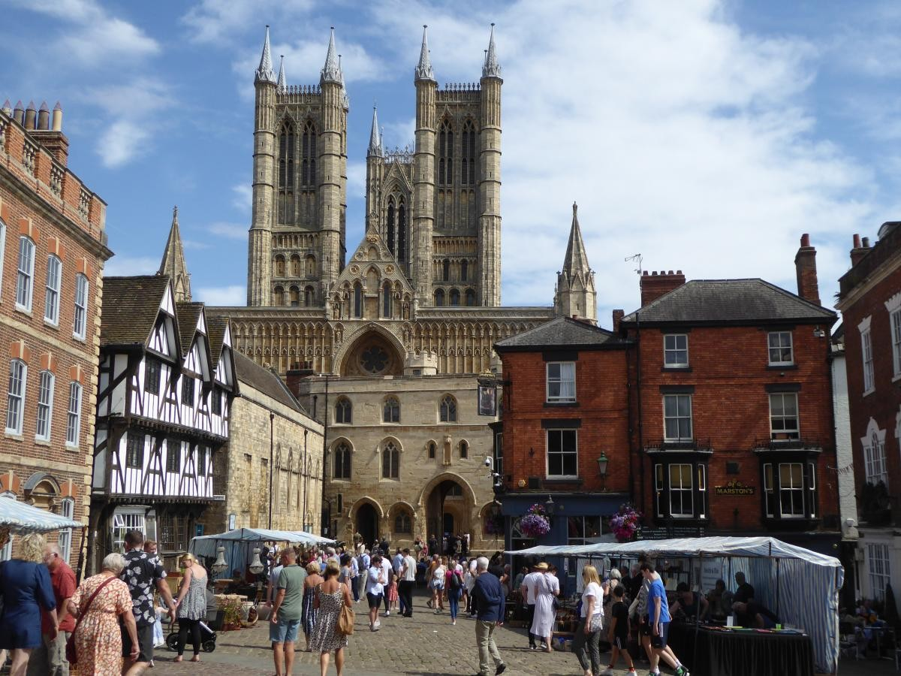
There was a good turnout for the Eastern Branch ringing for evensong at Lincoln Cathedral on Sunday 7th August, including ringers from other branches and friends.
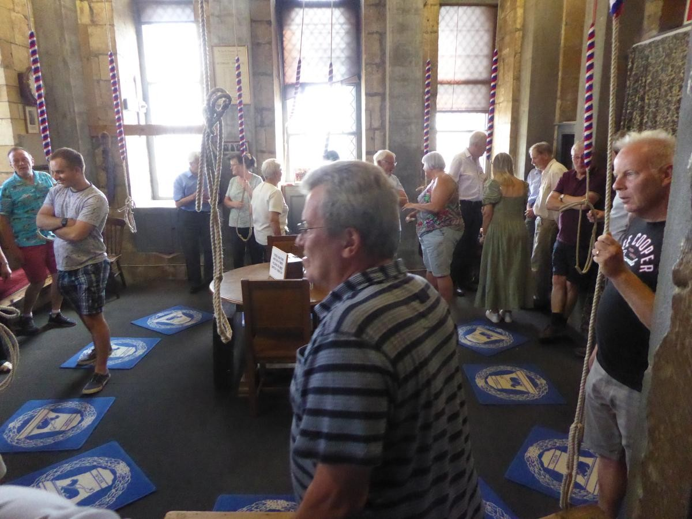
Thanks go to Les Townsend for letting us in and looking after us, Jo French and Kate Meyer for running the ringing and to everyone for turning up.
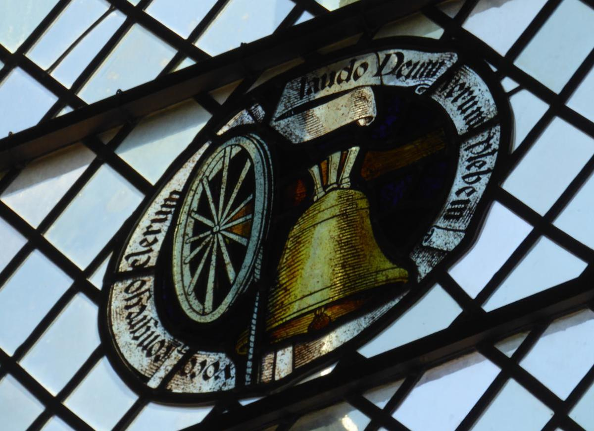
We could see for miles from the balcony as it was such a beautiful day.
Val Wild
Branch BBQ at Alford - July 2nd

On Saturday 2 July, LDGCBR Eastern Branch held their first BBQ since Covid 19 lockdown. It was a good evening, even though numbers were down due to Covid.
Approximately 35 ringers and their families, enjoyed ringing the bells at various levels in St Wilfred's before heading to the Church Hall for a delicious BBQ, expertly cooked by Clare and Ian Willoughby, ably assisted by their son, Daniel.
The Hall was prepared by Richard Willoughby and his very helpful wife Mary. The donated salads and sweets were very well presented and much appreciated.
A lot of post Covid catching up was done, with ringing talk dominating most of the conversations.
The quiz went well, and a raffle was staged which raised £60 for the Bell Repair Fund.
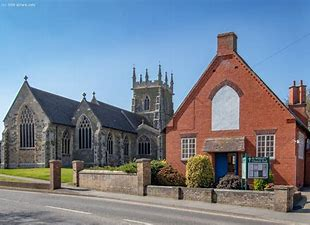
Thanks go to;
- Jo French, deputy ringing master, who organised the ringing,
- all the Alford ringers, who helped throughout the ringing and BBQ,
- the Willoughby family for all their efforts with the BBQ and Hall preparation,
- everyone who donated raffle prizes,
- and everyone who attended, to make it such a success.
An overall profit of over £200 was raised for the EB Bell Repair Fund.
Tess Rowland
Branch Practice at Spilsby - May 7th
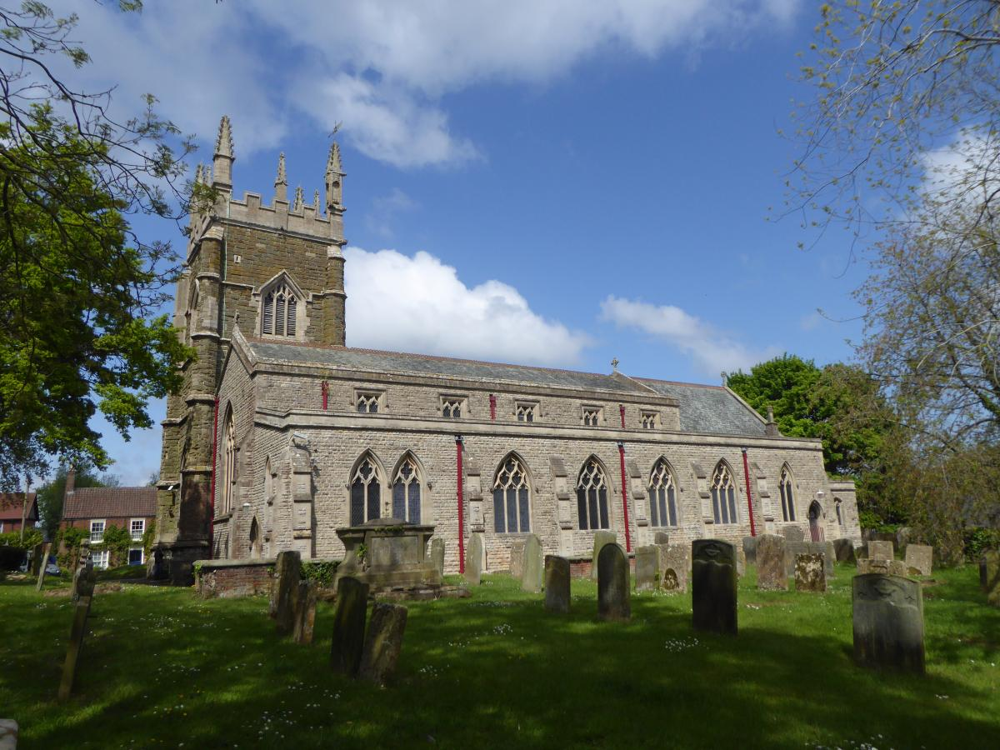
The second of this year's Eastern Branch practice meetings was held at St James' Church Spilsby. 16 ringers and a few partners attended and sumptuous refreshments (well, cake and biscuits anyway!) were provided by the local members.
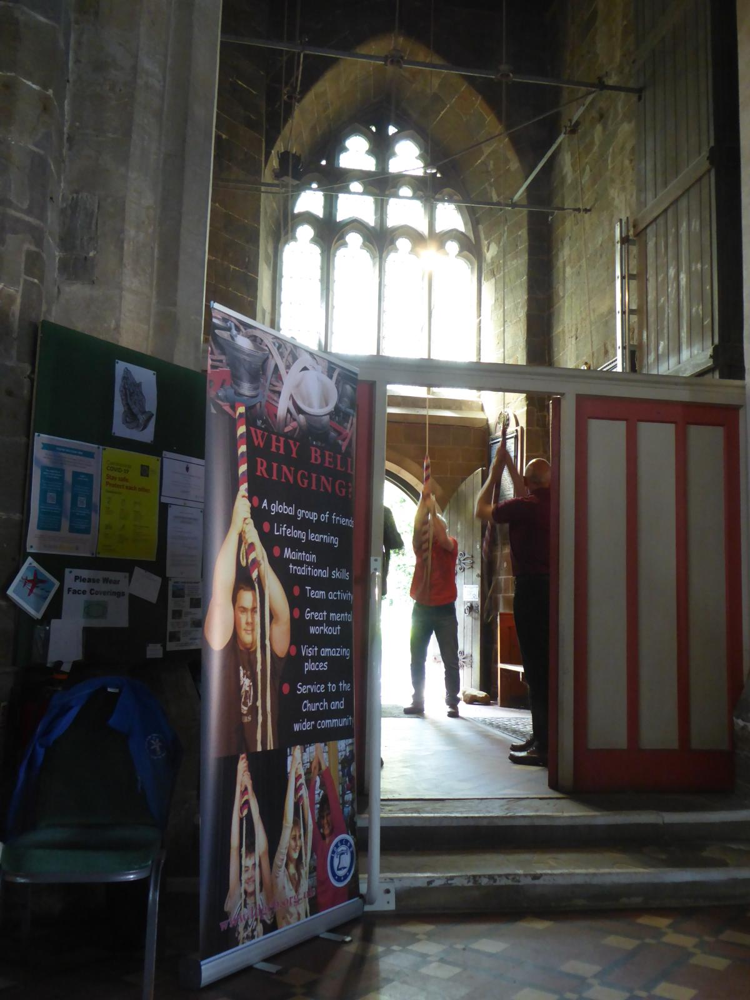
.
.
.
.
A comprehensive range of ringing was on offer for ringers of all abilities, and the 3 hour session soon flew by. In particular, several of the learners will have gained an enormous amount from the experience which can only help them back in their home towers
Thanks to Ringing Master Kate Meyer and all those who supported the event.
.
.
.
.
Branch Practice at Butterwick - April 2nd
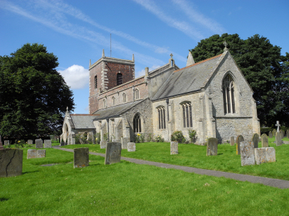
On Saturday afternoon, 2nd April 2022, the Eastern Branch held a well attended ringing meeting at Butterwick. It was good to welcome some visitors to the Branch including the Guild Master Chris Turner.
Kate Meyer (Ringing Master) and Jo French (Deputy RM) were in charge of the ringing which was varied to accommodate everyone.
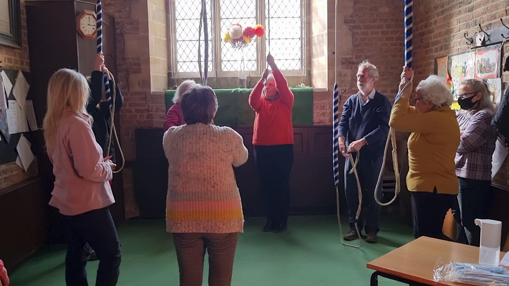
There was plenty of space to spread out into the church at this light, easy going, ground floor ring of six bells.
Maggie Bennett and David provided delicious tea, coffee and cakes throughout the afternoon.
The Branch Secretary Colin Simpson chaired a short meeting where four new members were elected and Tom Freeston was presented with a thank you gift for his services as accounts checker, he retired at the AGM in February this year. A gift was also sent to Mick Smith who retired as Branch President.
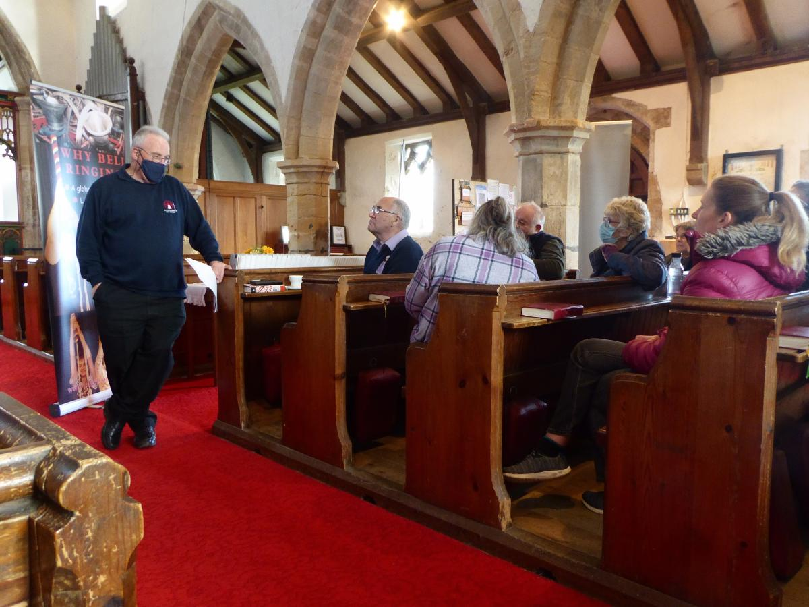
Colin reminded members that the Eastern Branch now possess a couple of banners which can be lent out for events promoting ringing, also the set of bell plates were on display which belong to the Eastern Branch.
Tess Rowland (treasurer) asked people to pay their annual subscriptions of ten pounds.
When the vicar Rev Andrew Higginson turned up, he was persuaded to join in and had a ring, his wife Christine had supported the ringing during the afternoon too.
The next meeting will be at Spilsby on Saturday 7th May 2022 starting at 2pm, all welcome!
Eastern Branch Virtual AGM - 6th February 2022
The Eastern Branch AGM was held on Zoom on 6th February. It was a first for many of us, but went very well!
All officers were re-elected en-bloc, with the exception of Val Wild who resigned from her office of Treasurer after a lengthy tenure. She leaves office with our grateful thanks. The role will be covered for the interim by Colin Simpson alongside his acting as Secretary.
The full minutes of the meeting will be made available here in due course.